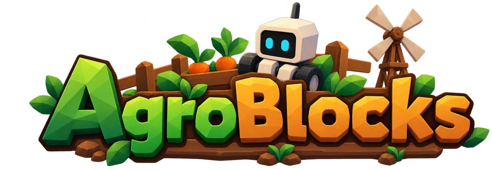
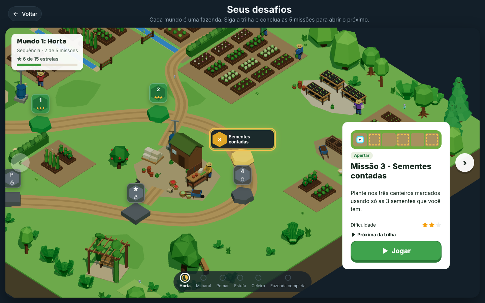
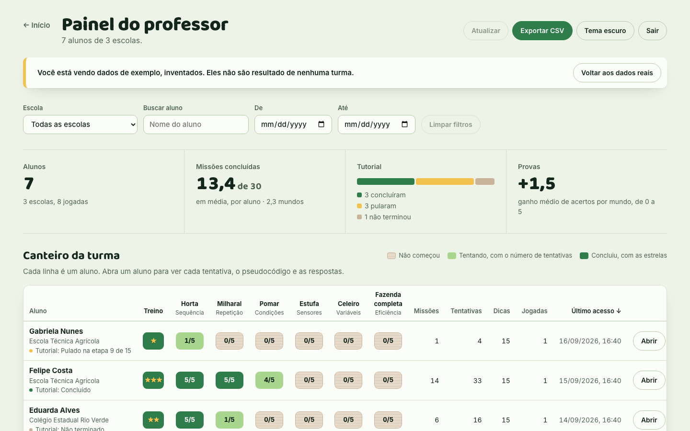

Jogo educativo de automação agrícola e programação visual para o Ensino Médio
Justificativa
Alunos aprendem a arrastar blocos, mas não a pensar o algoritmo.
Dificuldade em transformar um problema em uma sequência de instruções.
Pouco reconhecimento de padrões que pedem repetição ou uma condição.
Ambientes genéricos sem consequências visíveis nem recursos limitados.
Objetivo geral
Ensinar programação a quem cultiva: o aluno programa um robô agrícola com blocos numa fazenda 3D.
E medir se ele aprendeu, antes e depois de cada conceito, com provas próprias de programação.
Objetivos específicos
Seis metas concretas
Seis conceitos
Sequência, repetição, condições, sensores, variáveis e eficiência, em ordem.
Blocos em português
Editor Blockly que libera blocos novos a cada mundo.
Retorno educativo
Erros explicados, dicas graduais e pseudocódigo do programa.
Medir aprendizagem
Prova inicial e final de 5 questões por mundo, com feedback.
Eficiência
Correção separada de eficiência: estrelas para menos blocos e recursos.
Painel do professor
Progresso de cada aluno, gráficos por mundo e exportação CSV.
Fundamentação pedagógica
Os quatro pilares do pensamento computacional
Decomposição
Dividir "cultivar a horta" em preparar, plantar, regar e colher, e o caminho em passos.
Horta · Fazenda completaPadrões
Perceber que a mesma sequência se repete em cada canteiro e usar um laço.
Milharal · EstufaAbstração
Procedimentos e variáveis que escondem detalhes e dão nome a ideias.
Celeiro · Fazenda completaAlgoritmos
Instruções na ordem certa, com decisões e repetições com condição.
Todos os mundosEtapa 1 · Planejamento
Antes da primeira linha de código
- Especificação do jogo e referência visual da fazenda.
- Plano em fases, cada fase em seu próprio arquivo.
- Metodologia de avaliação: prova inicial e final por conceito.
- Requisitos e casos de uso no Termo de Abertura.
- 15 registros de decisão (ADR) explicando cada escolha técnica.
Etapa 2 · Design
Identidade low-poly, quente e legível
plantio
sol
solo
água

Design · Mundos
Um mundo para cada conceito
Horta
SequênciaOrdem importa
Levar o robô até a planta, preparar, plantar e colher, na ordem certa.
Milharal
Repetiçãorepita N vezes
Cuidar de uma fileira inteira com um laço em vez de copiar blocos.
Pomar
Condiçõesse / senão
Regar só o solo seco e colher só a fruta madura.
Estufa
Sensores e laço enquantoenquanto…
Andar até a parede sem saber o tamanho da fileira.
Celeiro
Variáveisguardar números
Controlar água, sementes e passos com recursos limitados.
Fazenda completa
Eficiência e procedimentosmenos é mais
Criar procedimentos, consertar programas e gastar menos energia.
Design · Jornada do aluno
Do cadastro ao próximo mundo
Cadastro
Nome e escola
Treino
15 etapas guiadas
Prova inicial
5 questões + feedback
Missões
Montar, executar, errar e corrigir
Resultado
Correção e estrelas
Prova final
Compara com a inicial
Próximo mundo
Até a Fazenda completa
Design · Blocos
Blocos liberados aos poucos
Horta
mover · virarpreparar · plantar · regar · colherMilharal
movimento e agriculturarepita N vezesPomar
+ repitase / senão3 sensoresEstufa
+ se / senãoenquanto · não2 sensoresCeleiro
+ enquantovariáveisnúmeros e comparaçãocoletarFazenda
todos os anterioresprocedimentosEtapa 3 · Código
Arquitetura em camadas
Interface
React + Blockly + React Three Fiber. Lê snapshots e envia comandos. src/features
Controlador
Máquina de estados da execução: executar, pausar, passo a passo, velocidade. execution/controller
Interpretador
Percorre a árvore do programa com generators, uma ação por vez. blocks/interpreter
Motor puro
Mundo, robô, regras, sensores e objetivos, sem depender da tela. src/game
Dados
Missões e provas declarativas, cada uma testada automaticamente. src/data
Código · Interpretador (versão simplificada)
function* runBlock(node, state) { switch (node.kind) { case 'action': yield applyAction(state, node.action) break case 'repeat': for (let i = 0; i < node.times; i++) yield* runBody(node.body, state) break case 'if': if (sense(state, node.test)) yield* runBody(node.then, state) } }
Sem eval, passo a passo
- Cada yield é um passo: dá para pausar, avançar um por vez e mudar a velocidade.
- Limite de passos para laços infinitos.
- O mesmo programa gera o pseudocódigo em português.
Código · Regras da simulação
Recursos que acabam e estrelas de eficiência
razão = máx(ações ÷ ações_ref,
blocos ÷ blocos_ref)Solução correta nunca é reprovada: eficiência é avaliada à parte.
Código · Retorno educativo
Quando o aluno erra
- 1
Bloco marcado
O bloco que causou o problema fica destacado no editor.
- 2
Erro explicado
O console narra cada passo e explica o erro em português, com pista. 14 tipos de erro.
- 3
Dicas graduais
4 dicas por missão, da ideia geral ao exemplo, liberadas uma a uma e registradas.
- 4
Pseudocódigo
Os mesmos blocos em texto: ponte para a programação textual.
Avaliação · Provas
Programação, não o jogo
Um laço dentro de outro laço. Quantas estrelas aparecem na tela?
repita 2 vezes:
repita 3 vezes:
escreva "★"
O laço de dentro roda 3 vezes para cada uma das 2 voltas do laço de fora: 2 × 3 = 6.
- 5 questões na prova inicial e 5 na final, em cada mundo: 60 no total.
- Sem retorno durante a prova; feedback completo no fim.
Avaliação
Antes e depois, em cada mundo

Avaliação · Painel do professor
O que o professor enxerga
- 1
Resumo da turma
Alunos, missões concluídas, tutorial e ganho médio nas provas.
- 2
Canteiro da turma
Cada aluno em cada mundo: não começou, tentando ou concluído com estrelas.
- 3
Onde a turma travou
Os erros que mais pararam os programas.
- 4
Prova inicial × final
A média de acertos antes e depois, por mundo.
- 5
Detalhe do aluno
Cada missão, estrelas, provas e tentativas. Exporta 3 arquivos CSV.
Ferramentas
O que foi usado
React 19
telas e componentes
TypeScript
tipos estritos em todo o código
Vite
servidor e build
Blockly
editor de blocos do Google
Three.js + R3F
fazenda 3D low-poly
Motion
animações da interface
Zustand + Zod
estado e validação do save
Vitest
testes de unidade
Playwright
testes de interface e vídeos do tutorial
Vercel + Upstash
servidor e banco do painel
glTF + sharp
modelos 3D CC0 e imagens
Git + GitHub
versionamento
Por que não…
Comparando com as alternativas
| Ferramenta | Blocos próprios | 3D leve no navegador | Painel com dados | Abre por link |
|---|---|---|---|---|
| Scratch | sim | não (2D) | não | sim |
| Unity | precisa criar | build pesado | precisa criar | WebGL lento |
| Construct | não | não (2D) | não | sim |
| Web (escolhido) | Blockly | Three.js | sim | sim |
Problemas e soluções
O que deu errado e o que aprendi
Técnicos
- Rodar o código do aluno→ interpretador próprio passo a passo, sem eval, com limite contra laço infinito.
- 3D em PC de escola→ instancing, modo de gráficos leves e grade 2D sem WebGL.
- Animais atravessando cercas→ grade de ocupação e rotas A* só por células livres.
- Cards "sambando" no mapa→ rótulo posicionado depois da câmera do mesmo quadro.
- Internet instável no laboratório→ progresso salvo no navegador e reenvio automático.
Pedagógicos
- Provas mediam o jogo→ questões de programação genérica; um teste bloqueia palavras do jogo.
- Longo demais para a aula→ 5 missões e 5 questões por mundo, com feedback no fim da prova.
Lições aprendidas
- Separar regra de telaMotor puro: cada missão testada sem abrir o navegador.
- Registrar decisões15 registros explicam cada escolha e ajudaram nas mudanças.
- Validar a prova cedoRevisar com professores antes teria poupado retrabalho.
- Menos conteúdo, mais focoCinco missões cabem na aula sem perder nenhum papel.
Roteiro da demonstração
- 1
Iniciar nova fazenda e se cadastrar
- 2
Treinamento guiado com vídeo e holofote
- 3
Prova inicial da Horta e o feedback
- 4
Missão: montar blocos, executar e errar de propósito
- 5
Dica, pseudocódigo e resultado com estrelas
- 6
Painel do professor com a jogada
Conclusão
Resultados e próximos passos
Entregue
6 mundos, 30 missões testadas, treinamento guiado, provas com feedback, painel do professor e hospedagem por link.
Próximos passos
Aplicar com uma turma real, comparar com um grupo sem o jogo e ajustar dificuldade pelos erros mais comuns do painel.
Referências
Bases do projeto
- BRASIL. CNE/CEB. Parecer nº 2/2022 – Computação na Educação Básica (complemento à BNCC).
- WING, J. M. Computational thinking. Communications of the ACM, 2006.
- BRACKMANN, C. P. Desenvolvimento do pensamento computacional… Tese, UFRGS, 2017.
- PAPERT, S. Mindstorms: children, computers, and powerful ideas. 1980.
- RESNICK, M. et al. Scratch: programming for all. Communications of the ACM, 2009.
- GEE, J. P. What video games have to teach us about learning and literacy. 2003.
- GOOGLE. Blockly. developers.google.com/blockly · W3C. WCAG 2.2. · LGPD, Lei nº 13.709/2018.
Obrigado!
Perguntas? Automatize. Programe. Cultive.